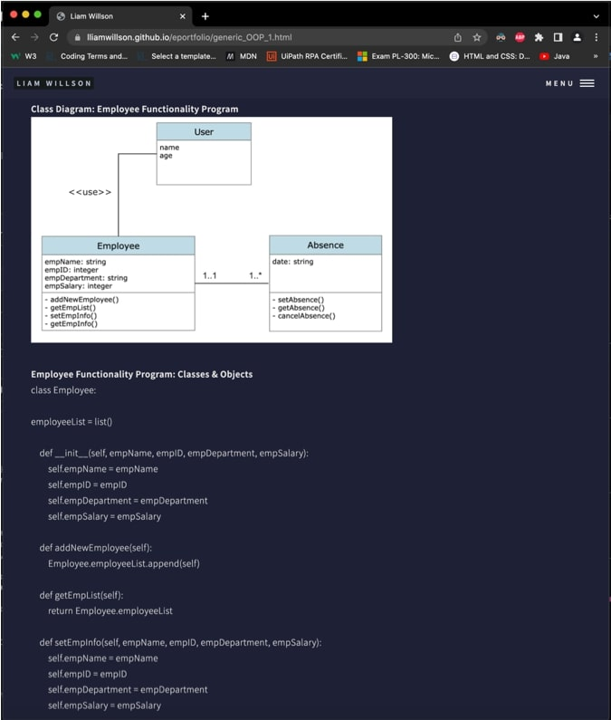
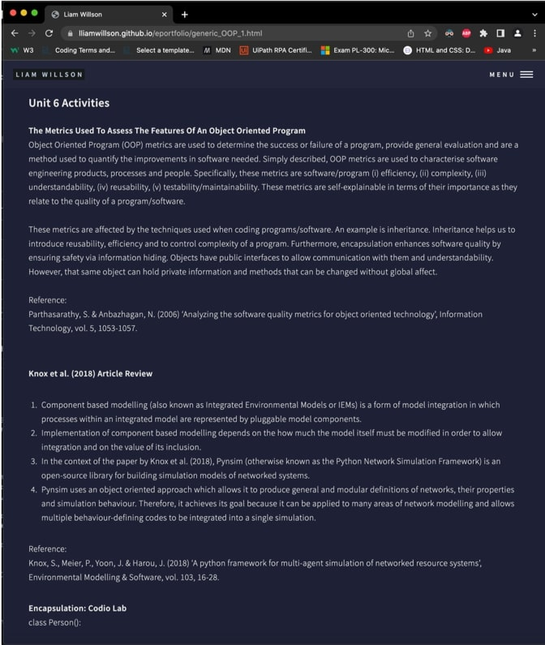
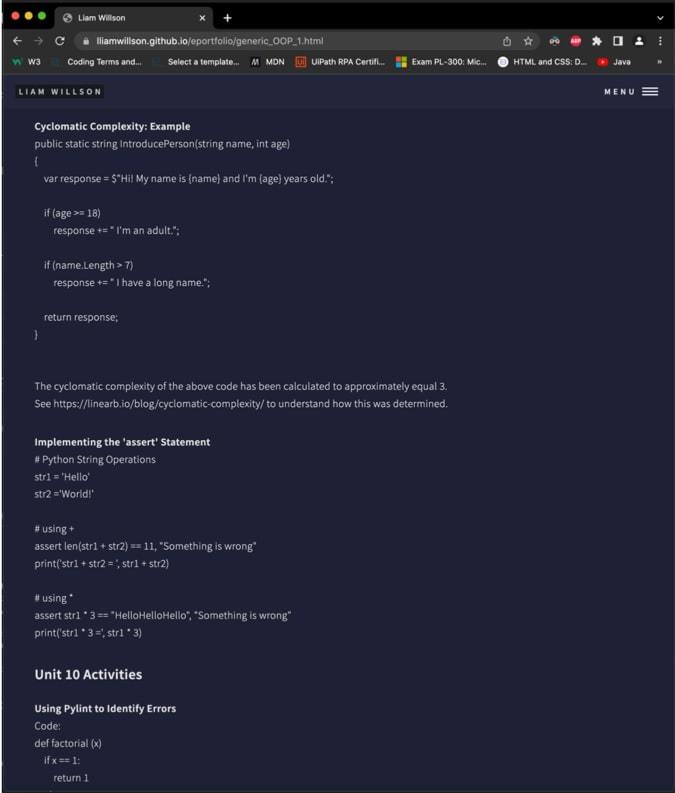

Assignment 3
Assignment 3 - Reflection
This is an analytical reflection written to summate my completion of the Object-Oriented Programming module part of the Computer Science program at the University of Essex. It aims to analyse and discuss 3 topics. Firstly, what I have learned during this module object-oriented programming. Secondly, my work completed throughout the module and finally, the impact on my professional/personal development. It will utilise Rolfe et al.’s (2001) approach to reflective writing. The ‘What?’, ‘So what?’ and ‘Now what?’ themes will be respectively used to develop my reflection and will answered in relation the module completed. Critically, this is in effect a review of my furthering and development of professional skills. These include, of course critical thinking and problem solving. Furthermore, the work completed throughout this module which provided the development of my learnings and hence basis for this reflection, include, development of coding artefacts, collaborative discussion pieces, a system design plan project, a system implementation project and other smaller reflective/literature pieces as presented in my e-portfolio. Thus, there is much to discuss in this integrated and comprehensive reflection of my experience whilst completing this module.‘What?’ What were the project outcomes and what was my response? The project outcomes of the system design and system implementation projects were, to learn how to prepare UML models to support the object-oriented programming design process, implement data search algorithms to process stored data in the most efficient approaches and apply data structures to support the storage of data in a variety of ways. To achieve these project outcomes, I ensured I prioritised time management because I knew that the simultaneous learning of new high-level programming and computer science concepts in Python 3 alongside completing these projects would require this. As a result, I deliberately allocated time weekly for university work and then sub-allocated this time appropriately to the project or activity that required it. By doing this, I was able to systematically approach the workload and complete it efficiently to a high-level (Rolfe et al., 2001).
Working on the modules projects provided me fulfilling satisfaction that in hindsight is to be expected when problem solving that ultimately produces a real-world applicable result after extracting from critical thinking and analysis, resilience and emotional intelligence. However, I also experienced significant frustration if I came across a blockade in the problem solving process that I could not timely produce a solution for and progress. Although, in hindsight I realise this is the moment for the deepest learning (Walker et al., 2015). These moments require the greatest amount of emotional intelligence and grit, although in the moment they negatively affected my work because my focus and ethic became narrowed and exhausted until I would finally solve the issue at hand. Now, I will be able to apply better practice in the future and in the face of obstacles that arise and overall I will be able to work more efficiently.
‘So what?’ So what did I learn and what are my changed actions now and in the future? After deep thought regarding what exactly produced my learning, I have concluded that it is indeed this process. The process of coming upon an issue, analysing the issue, applying already learnt techniques and failing and then employing emotional intelligence, resilience, critical thinking, problem solving, asking for help and ultimately, self-learning to overcome the issue. As a result, because my prior thinking involved approaching issues with a more static mindset and an expectation that I will fail at the outset, I have been able to mold my approach into a much more dynamic one (Walker et al., 2015). One that prioritises efficiency, but also patience, as I must allow myself to self-learn what is being required to complete the project and whatever instantaneous issue is at hand (Rolfe et al., 2001).
The skills and knowledge I have developed throughout this experience are ultimately evidenced by my work I have produced and presented in my e-portfolio as well as my completed projects. Refer to ‘Object Oriented Programming’ in my e- portfolio at ‘https://lliamwillson.github.io/eportfolio/’ for review. Furthermore, I have attached snapshots of my e-portfolio work below:
Figure 1:

Figure 2:

Figure 3:

Figure 1 is evidence of an attempt to simulate the complete process of producing UML models and then an artefact of code for a simple weekly activity completed throughout the module. A representation of the ultimate main projects completed in the module and evidence learning in a preparatory way before attempting the main projects. Figure 2 is evidence of writing to literature and therefore, the expanse of my learning outside of the confines of simply writing artefacts of code. And finally, Figure 3 is evidence of my completion of coding artefacts to simply supplement my learning of the skills necessary to computer science itself.
‘Now what?’ No what will I do to ensure these learnings are retained and can be utilised as a base to develop further learnings from? By completing this reflection and analysing my learning I have already begun to solidify and quantify my learnings for use in the future. In addition to continuing to enjoy and commit myself to self- learning and development, I have now a tangible review to remind myself of what works and importantly, what doesn’t. The consequences of not continuing to commit myself to self-learning and step-wise review whilst undertaking new learning will only set back my development and ability to retain already learnt skills and not have to unnecessarily revisit them. Although, because my experience throughout this module has had the additional effect of enlightening and motivating me because I have been exposed to object-oriented programming and its power in relation to real-world application, I am confident in my desire to continue self-learning and believe it will be inherently motivated (Rolfe et al., 2001).
After careful self-review of my journey and experience throughout completing this module, I have identified and made important conclusions regarding my learning using the ‘What?, ‘So what?’ and ‘Now what?’ reflection framework. I have concluded that the process which has allowed me to learn by encountering and overcoming issues and seeking their resolve is characterised by resilience, asking for help, critical thinking, problem solving and of course, patience (Walker et al., 2015). I also realised that whilst completing this module I experienced satisfaction and enjoyment from upon producing the required work. This is because I can finally visualise the real-world application of my computer science skills after diving into object-oriented programming. I look forward to further progression and reflection as I move forward whilst completing the remainder of my program with the University of Essex.
References
Brookshear, J. & Brylow, D. (2019). Computer Science: An Overview. 13th ed. Harlow: Pearson Education Limited.
Lipschutz, S. (2004). Theory and Problems of Data Structures. 1st ed. Tata McGraw-Hill, London.
Rolfe, G., Freshwater, D. & Jasper, M. (2001). Critical Reflection for Nursing and the Helping Professions: A User's Guide. Palgrave.
Walker, A., Leary, H., Hmelo-Silver, C. & Ertmer, P. (2015). Essential Readings in Problem-based Learning. Purdue University.